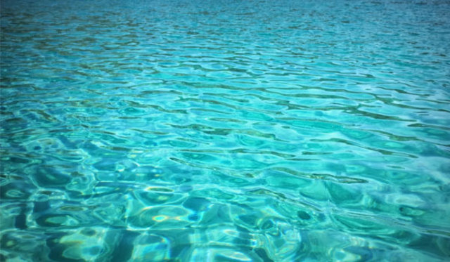
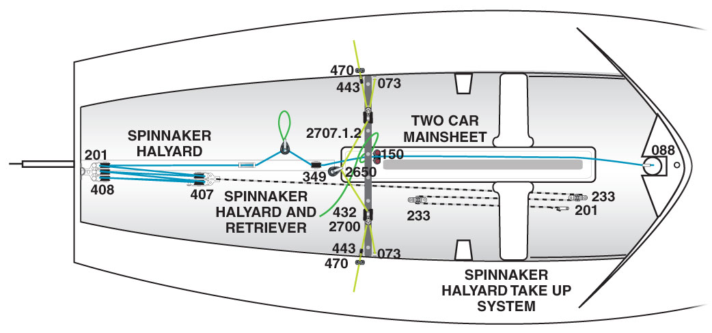
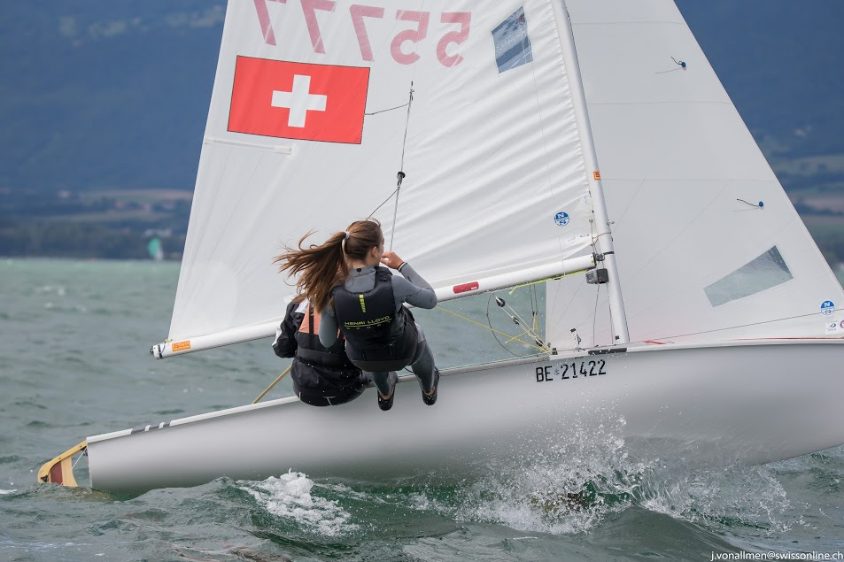
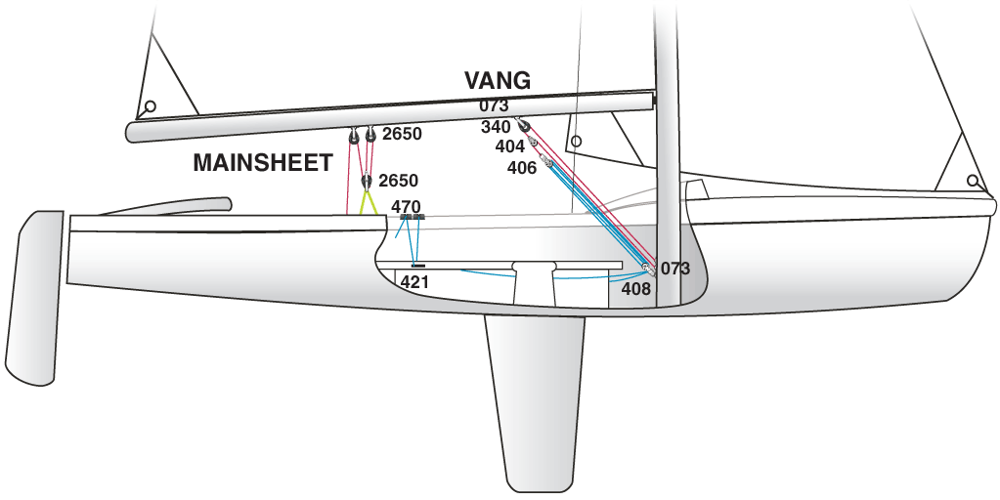

470 CLASS BOAT INFORMATION

| Type |
Centreboard Boat |
| Crew |
2 |
| Optimum Crew Weight |
110-145 kg |
| Designer |
André Cornu (FRA) |
| Hull Material |
GRP |
| Year Designed |
1963 |
| Trapeze |
Single |
| Length |
4.7m |
| Length of waterline |
4.4m |
| Weight |
120kg |
| Mast |
6.76m |
| Total Sail Area |
12.7m2 |
| Jib |
3.58m2 |
| Main |
9.12m2 |
| Spinnaker |
13m2 |

420 CLASS BOAT INFORMATION

| Type |
Centreboard Boat |
| Crew |
2 |
| Optimum Crew Weight |
90-120 kg |
| Designer |
Christian Maury |
| Hull Material |
GRP |
| Year Designed |
1959 |
| Trapeze |
Single |
| Length |
4.2m |
| Length of waterline |
4.1m |
| Weight |
80kg |
| Mast |
5.46m |
| Total Sail Area |
9.7m2 |
| Jib |
2.58m2 |
| Main |
8.12m2 |
| Spinnaker |
10m2 |
